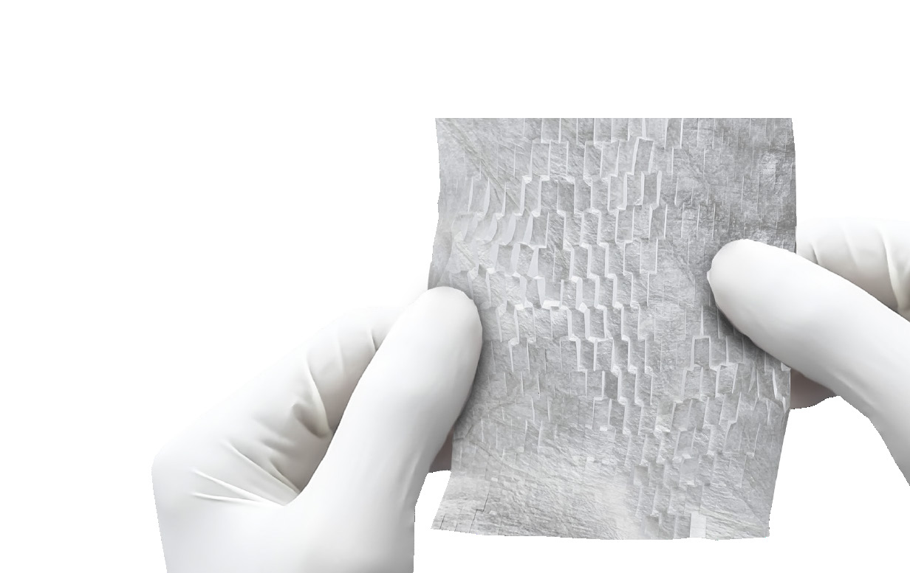
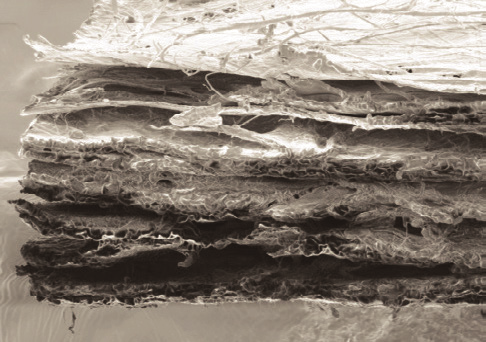
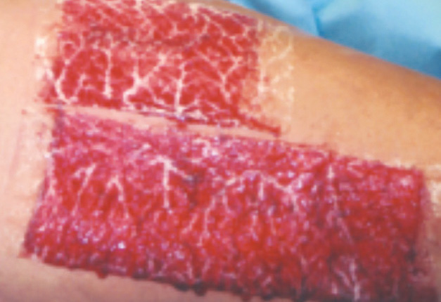
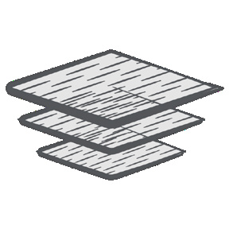

Smith+Nephew
OASIS® Wound Matrix
A porcine extracellular matrix supported by a randomized trial in chronic leg ulcers.

Chronic leg ulcers healed at 12 weeks (P=.0196), 120 patients.
Mostow EN et al. J Vasc Surg. 2005;41(5):837-43. PMID 15886669.How it works
A natural extracellular matrix
Per Smith+Nephew and FDA K061711.
Swipe to see each stage →

Porcine small intestinal submucosa
An acellular extracellular matrix, described by the manufacturer as similar in composition to human dermis.

Placed on the prepared wound
Single use, supplied sterile.

Room temperature
Manufacturer states 24 month shelf life at room temperature; not subject to Joint Commission tissue tracking.
Evidence
Clinical studies
Manufacturer case gallery
Individual case reports from the Smith+Nephew OASIS product guide (2023). Not trial evidence. Patient photos from manufacturer materials.
Swipe through cases →
Scald burn, lower leg (OASIS Burn Matrix)
46M deep partial-thickness scald. Reapplied day 5, then as needed. Closed at 7.5 weeks; good outcome at 7 months.
Venous stasis ulcer, medial ankle (OASIS ULTRA)
65F, 4-month VSU after ablation. 7 weekly applications plus compression. 4.0x2.8 cm at day 0; 100% epithelialized at day 49.
Dog bite, forearm (OASIS ULTRA)
41F with RA on steroids. 2 applications, STSG day 12, 100% graft take day 21, closed day 74.
Scalp carcinoma resection, exposed bone (OASIS ULTRA)
54M. 2 applications, FTSG/STSG day 17, closed day 24. Combined with grafting.
Randomized trials
Venous leg ulcers: 55% vs 34% healed at 12 weeks with OASIS plus compression vs compression alone (statistically significant).
Details, limitations, citation120 patients, multicenter
- Prospective, randomized, multicenter. OASIS plus compression (n=62) vs compression alone (n=58)
- Weekly application up to 12 weeks; primary outcome proportion healed at 12 weeks (P=.0196)
- No recurrence among healed OASIS patients seen at 6 month follow-up
- Limitations: industry-associated authors; single trial; results from published abstract (full text not on file)
Mostow EN, Haraway GD, Dalsing M, Hodde JP, King D. J Vasc Surg. 2005;41(5):837-43. PMID 15886669.
Diabetic foot ulcers: OASIS performed comparably to Regranex Gel (49% vs 28% closed at 12 weeks). Not statistically significant (P=.055).
Details, limitations, citation73 patients, active comparator
- Randomized, 9 outpatient clinics. OASIS (n=37) vs becaplermin gel (n=36)
- Authors state the sample was not large enough to show superiority; conclusion is "as effective as" Regranex
- Comparator was an active treatment, not standard care alone. Do not present as superiority
Niezgoda JA, Van Gils CC, Frykberg RG, Hodde JP. Adv Skin Wound Care. 2005;18(5 Pt 1):258-66. PMID 15942317.
Details
Product information
What it isPorcine SIS extracellular matrix
- Animal derived, acellular extracellular matrix wound care product (FDA K061711, product code KGN)
- Manufactured by Cook Biotech; marketed by Smith+Nephew
- Terminally sterilized, single use
Product familyAs listed by Smith+Nephew
- OASIS Wound Matrix (1 layer, fenestrated)
- OASIS Burn Matrix (2 layer)
- OASIS ULTRA Tri-Layer Matrix
- OASIS XL (600 cm²)
- OASIS MICRO (micronized, for tunneled/undermined wounds)
Confirm sizes and SKUs against the current product guide.
IndicationsPer FDA K061711
Partial and full thickness wounds; pressure, venous, diabetic and chronic vascular ulcers; tunneled/undermined wounds; surgical wounds (donor sites/grafts, post-Mohs, post-laser, podiatric, wound dehiscence); trauma wounds (abrasions, lacerations, second-degree burns, skin tears); draining wounds.
Contraindications and warnings: consult the current IFU at ifu.smith-nephew.com.
Source documentsPublic references
- FDA 510(k) K061711 summary
- Smith+Nephew OASIS product page (smith-nephew.com)
- Smith+Nephew IFU portal
- Mostow 2005; Niezgoda 2005
- OASIS Product Guide and IFUs (Venture Medical Linktree reference, not yet reviewed)
Claims check (internal)Flags from source verification
- Mostow RCT is primary evidence. Niezgoda shown with non-significance stated.
- Shelf life and family list are manufacturer statements; verify on current IFU.
- No Smith+Nephew images or logos used.
- LMN templates in Drive are practice-specific and internal only.
Contact
Talk with Sheridan
Text Abiad to set up a visit, discuss a patient, or schedule an in-service.
Please do not include patient information in text messages.